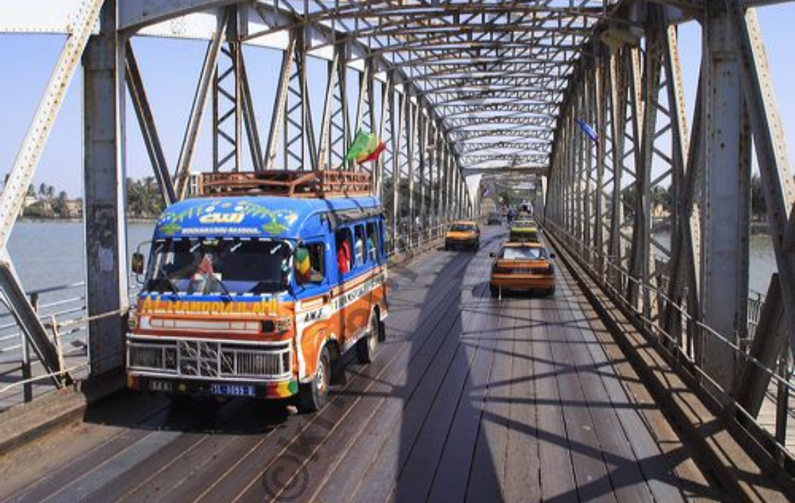
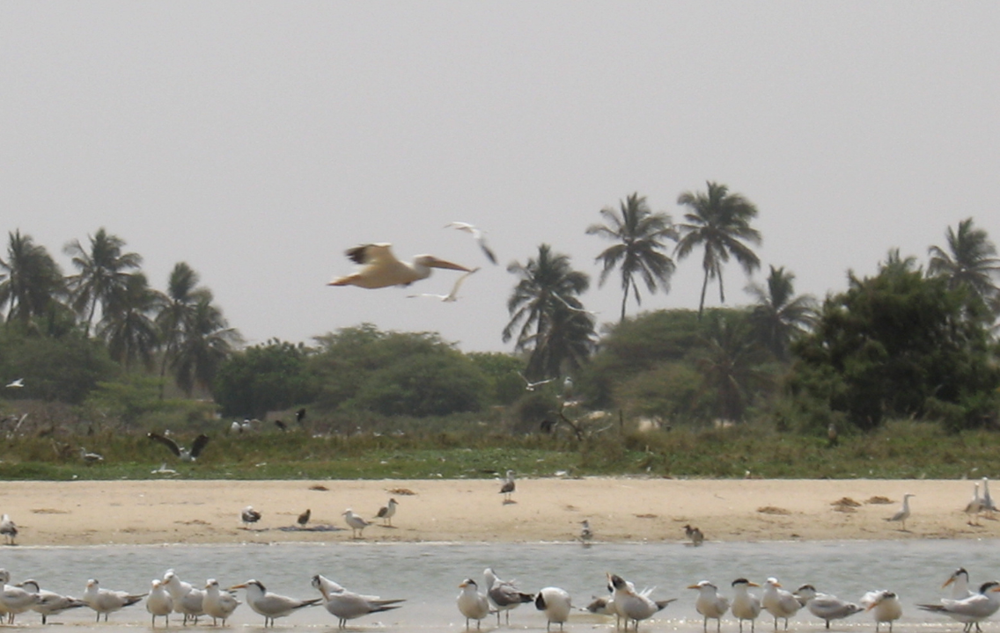
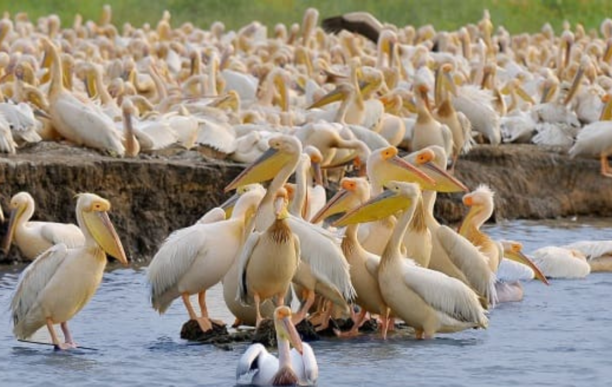
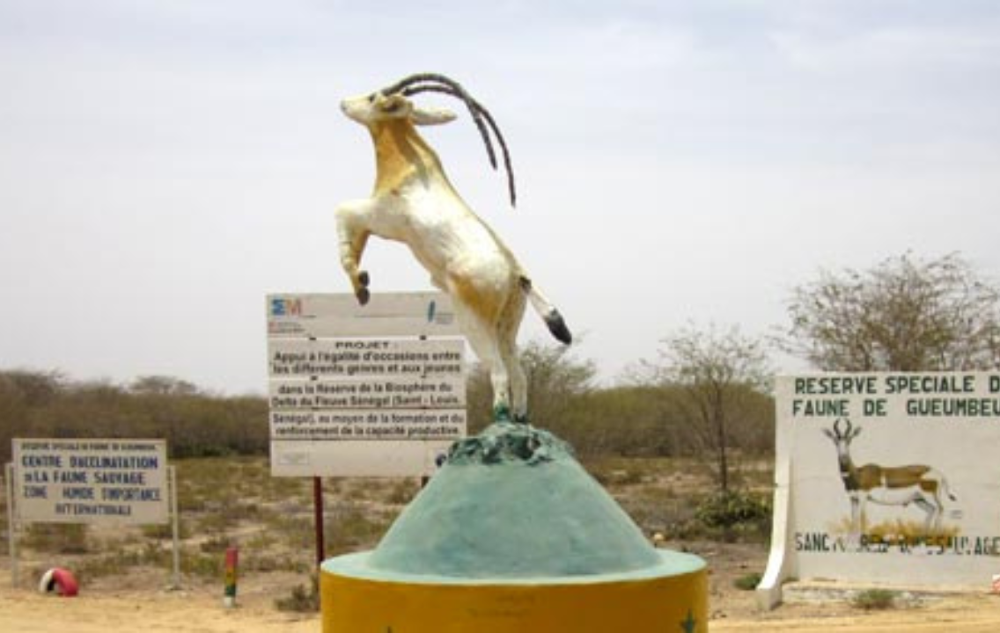
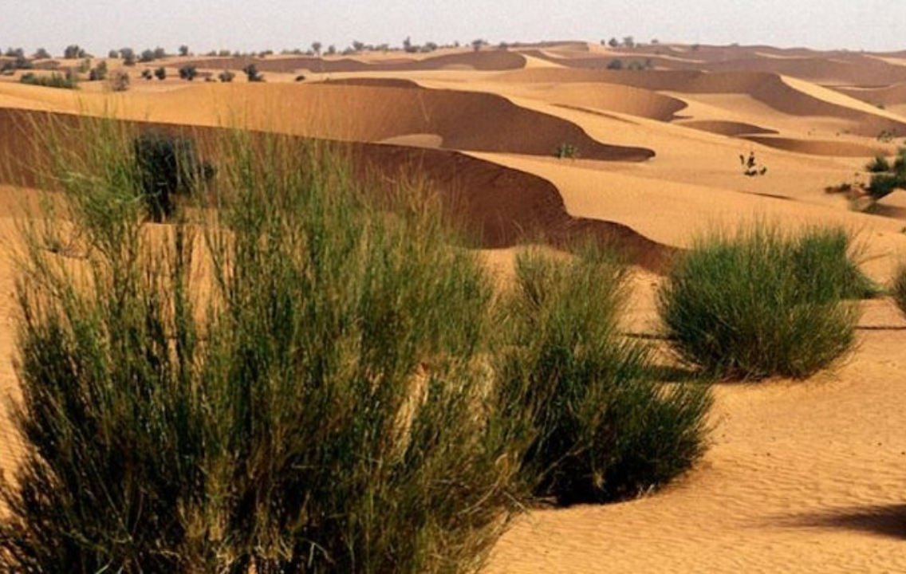

Bienvenue à Saint-louis
Saint-Louis, Ndar en wolof, souvent appelée « Saint-Louis-du-Sénégal », est l'une des plus grandes villes du Sénégal et, historiquement, l'une des plus importantes, comme en témoigne son inscription sur la liste du patrimoine mondial de l'UNESCO. C'était avec Gorée, Rufisque et Dakar une des quatre communes de plein exercice du Sénégal qui envoyaient un député à la Chambre française depuis le xixe siècle. Ces Quatre communes ne doivent pas être confondues avec les Quatre vieilles colonies de pleine citoyenneté (Guadeloupe, Guyane, Martinique et la Réunion)1.
Parc langue de barbarie
Saint-Louis, Ndar en wolof, souvent appelée « Saint-Louis-du-Sénégal », est l'une des plus grandes villes du Sénégal et, historiquement, l'une des plus importantes, comme en témoigne son inscription sur la liste du patrimoine mondial de l'UNESCO. C'était avec Gorée, Rufisque et Dakar une des quatre communes de plein exercice du Sénégal qui envoyaient un député à la Chambre française depuis le xixe siècle. Ces Quatre communes ne doivent pas être confondues avec les Quatre vieilles colonies de pleine citoyenneté (Guadeloupe, Guyane, Martinique et la Réunion)1.
Parc de Djoudj
Saint-Louis, Ndar en wolof, souvent appelée « Saint-Louis-du-Sénégal », est l'une des plus grandes villes du Sénégal et, historiquement, l'une des plus importantes, comme en témoigne son inscription sur la liste du patrimoine mondial de l'UNESCO. C'était avec Gorée, Rufisque et Dakar une des quatre communes de plein exercice du Sénégal qui envoyaient un député à la Chambre française depuis le xixe siècle. Ces Quatre communes ne doivent pas être confondues avec les Quatre vieilles colonies de pleine citoyenneté (Guadeloupe, Guyane, Martinique et la Réunion)1.
Reserve de Guembeul
Saint-Louis, Ndar en wolof, souvent appelée « Saint-Louis-du-Sénégal », est l'une des plus grandes villes du Sénégal et, historiquement, l'une des plus importantes, comme en témoigne son inscription sur la liste du patrimoine mondial de l'UNESCO. C'était avec Gorée, Rufisque et Dakar une des quatre communes de plein exercice du Sénégal qui envoyaient un député à la Chambre française depuis le xixe siècle. Ces Quatre communes ne doivent pas être confondues avec les Quatre vieilles colonies de pleine citoyenneté (Guadeloupe, Guyane, Martinique et la Réunion)1.
Desert de lonpoul
Saint-Louis, Ndar en wolof, souvent appelée « Saint-Louis-du-Sénégal », est l'une des plus grandes villes du Sénégal et, historiquement, l'une des plus importantes, comme en témoigne son inscription sur la liste du patrimoine mondial de l'UNESCO. C'était avec Gorée, Rufisque et Dakar une des quatre communes de plein exercice du Sénégal qui envoyaient un député à la Chambre française depuis le xixe siècle. Ces Quatre communes ne doivent pas être confondues avec les Quatre vieilles colonies de pleine citoyenneté (Guadeloupe, Guyane, Martinique et la Réunion)1.

L'expertise avérée pour une amélioration continue
INPROCESS est une entreprise de droit sénégalais légalement constituée. Forte de son expérience de plus de cinq ans dans les domaines de l’ingénierie informatique, de la télécommunication, de la communication globale, de la création graphique et de la formation professionnelle, InProcess est une équipe d’experts qui trouve du plaisir à vous servir. Partout au Sénégal et dans la région ouest africaine, InProcess se déploie au bonheur des ses partenaires.